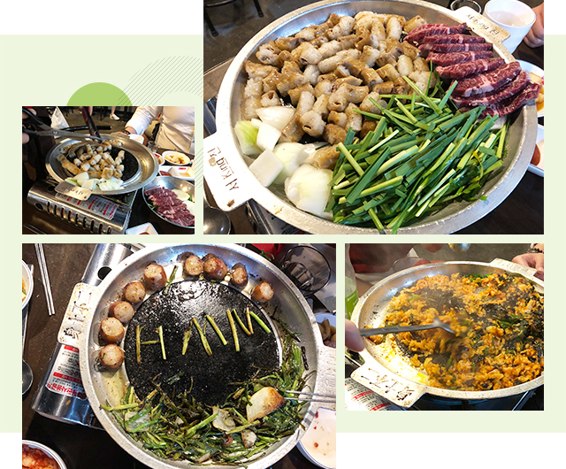
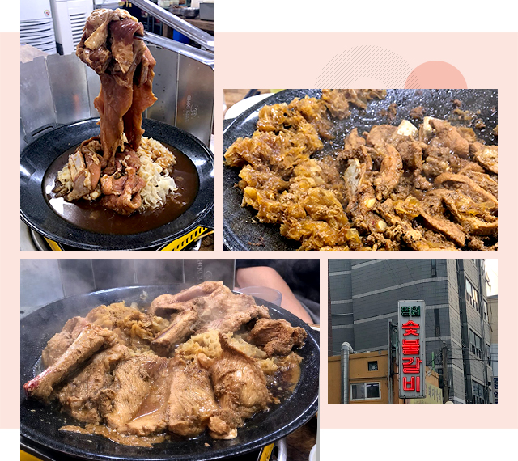

와 제 롤모델이 잡스에요!!! 아이폰 첫 출시되고 나서부터 계속 아이폰 쓰고 있는데 잡스가 너무 그리워요ㅠㅠ 지금은 돈만 벌려고 하는 것 같아서 디자인 발전도 없고ㅠㅠ와 제 롤모델이 잡스에요!!! 아이폰 첫 출시되고 나서부터 계속 아이폰 쓰고 있는데 잡스가 너무 그리워요ㅠㅠ 지금은 돈만 벌려고 하는 것 같아서 디자인 발전도 없고ㅠㅠ와 제 롤모델이 잡스에요!!! 아이폰 첫 출시되고 나서부터 계속 아이폰 쓰고 있는데 잡스가 너무 그리워요ㅠㅠ 지금은 돈만 벌려고 하는 것 같아서 디자인 발전도 없고ㅠㅠ와 제 롤모델이 잡스에요!!! 아이폰 첫 출시되고 나서부터 계속 아이폰 쓰고 있는데 잡스가 너무 그리워요ㅠㅠ 지금은 돈만 벌려고 하는 것 같아서 디자인 발전도 없고ㅠㅠ와 제 롤모델이 잡스에요!!! 아이폰 첫 출시되고 나서부터 계속 아이폰 쓰고 있는데 잡스가 너무 그리워요ㅠㅠ 지금은 돈만 벌려고 하는 것 같아서 디자인 발전도 없고ㅠㅠ
먹스타 맛집
현상인이 소개하는 종로 회식하기 좋은 맛집
곱창부터 갈비까지,
회식 메뉴 탐구생활
회식 메뉴 탐구생활
맛집 블로거, 먹스타그래머로 알려진 현상인들이 직접 맛집을 소개한다.
곱창이 아재 음식이라는 인식은 옛말이 되었다. 요즘은 남성보다 더 많은 여성들이 곱창의 매력에 빠져 헤어나오지 못하고 있다. 또 갈비는 남녀노소, 다양한 연령층이 선호하는 메뉴로써 많은 이들에게 사랑받는 음식이다. 둘 중에 회식 메뉴를 하나 고르라 하면 선택 불가! 동료와 술 한잔 기울이기 좋은 두 메뉴의 맛집을 조슬옹 사원이 직접 소개한다.
글·사진
조슬옹 사원 (인재경영팀)
혜화 부추곱창
혜화역에서 가장 북적거리는 4번 출구 근처에 성균관대생은 모두 다 아는 부추곱창 맛집이 있다. 상당한 규모의 대학가이지만 세련되지 않은 분위기의 식당이다 보니 직장인과 젊은 대학생들이 혼재되어 있다. 들어가면 ‘부추곱창’이라는 노란색 글씨가 가슴에 새겨진 붉은색 유니폼의 직원들이 쉴 새 없이 음식을 나르고 있고, 식당 안은 고소한 곱창 냄새로 가득 차 있다. 넓은 테이블 없이 4~6인까지만 수용 가능한 원형 테이블 밖에 없기 때문에 소규모로 회식하기엔 좋은 장소이다.

소주를 부르는 환상의 조합
어느 곱창집을 가든 가장 맛있는 메뉴는 곱창과 볶음밥일 것이다. 여기도 그렇다. 혜화 부추곱창은 곱창에 부추가 곁들여진 부추곱창이 주메뉴이며, 육회·소고기·된장찌개 등은 서비스로 제공한다. 부추곱창의 경우 곱창의 기름으로 익는 느낌 반, 튀기는 느낌 반으로 노릇노릇하게 구워져 나온다. 다소 느끼할 수도 있지만, 싱싱한 부추와 자극적인 소스 맛이 적절히 조화되어 쉴 새 없이 소주잔을 ‘짠’하게 만든다.
밑반찬으로 제공되는 육회는 맛만 겨우 볼 정도로 나오는데, 양념이 강하지 않아 육회의 은은한 맛이 입안에 확 퍼진다. 육회를 추가 주문할 경우, 1인분에 1만원이라는 합리적인 가격 때문에 곱창을 다 먹은 뒤 안주가 부족할 때 주문하면 딱 좋다. 또, 모든 테이블에 소량의 소고기가 서비스로 제공되는데, 이 또한 맛이 없을 리가 없다. 마지막으로 곱창을 다 먹은 뒤 볶음밥이 빠질 수 없다. 사실 어느 식당을 가도 후식으로 먹는 볶음밥은 맛있지만, 곱창 기름에 볶아서 그런지 특히 더 맛있다.
친절보다 맛으로 승부한다
대학가에 위치해있고, 곱창 맛집으로 유명한 곳이라 늘 손님으로 북적거린다. 그러나 테이블 회전율이 생각보다 높아 대기를 하더라도 조금만 기다리면 된다. 하지만 직원들은 친절하지 않다. 손님의 주문을 무시하는 것은 아니나, 응대하는 태도가 다소 무뚝뚝하다. 혹여나 기분이 나빠도 번화가의 인기 있는 맛집이거니 생각하며, 부추곱창과 볶음밥을 맛있게 먹으면 된다. 식사 후 2차 술자리를 찾는다면, 근처에 위치한 명륜포차를 추천한다. 김치찌개를 주문하고 청양고추와 파를 조금 더 달라고 해서 가미하면, 얼큰하고 양도 많은 것이 해장까지 가능하게 한다.
Info
-

 서울 종로구 대명1길 9
서울 종로구 대명1길 9 -

 02-747-3610
02-747-3610 -

 부추곱창 ￦15,000 / 대창 ￦15,000 / 육회 ￦10,000
부추곱창 ￦15,000 / 대창 ￦15,000 / 육회 ￦10,000
효제동 평원숯불갈비

술 먹기 좋은 노상이 매력적인 공간
퇴근 후 종로 방면으로 걸어 갈 때면 효제초등학교 뒤쪽에 위치한 간판부터 매력 있는 식당이 보인다. 편의점과 작은 영세가게들이 즐비한 곳에서 허름한 간판이 돋보이는 이곳. 대담하게도 도롯가에 노상을 펴 놓고 장사를 한다. 물론 도롯가이지만, 차가 거의 다니지 않고 이미 많은 사람들이 노상에서 식사를 하고 있어 전혀 위험하다는 느낌이 들지 않는다. 노상에서 선선한 바람과 그 특유의 왁자지껄한 분위기 속에서 갈비를 먹으며 소주를 마시다 보면, 회사에 남겨두고온 일들도 잊혀지기 마련이다. 그만큼 분위기가 매력적인 식당이다.
비주얼 담당 공중부양 물갈비
평원숯불갈비의 대표 메뉴는 공중부양 물갈비이다. 갈비가 실제 떠있는 건 절대 아니다. 공중부양 물갈비는 갈비를 쇠꼬치와 집게를 이용해 양념 위에 고정시킨 모습 때문에 붙여진 이름이다. SNS의 맛집 추천글에서나 볼법한 비주얼에 감탄하게 될 것이다. 갈비 아래 깔려있는 은이버섯이 익을 때쯤, 직원이 쇠꼬치와 집게를 해체하고 고기를 내려준다. 양념이 끓어 고기가 익는 소리가 날 때쯤, 사방에 풍기는 그 냄새가 대단히 향긋해 냄새 마저도 훌륭한 안주가 된다.
손님이 없는 한가한 식당은 아니나, 줄을 서야 하거나 북적거려서 대화가 안되는 장소도 절대 아니다. 그렇기에 회식하기에 적절한 곳이라고 한 것이다. 가장 중요한 것은 공중부양 갈비의 멋있는 외양과 맛이오, 두 번째는 사장님의 친절이다. 고등학생 시절 유행하던 일본식 비대칭머리를 한 사장님의 인상과 친절은 절로 소주 한 병을 더 주문하게 만든다.
TIP공중부양 물갈비 맛있게 먹는 방법
- 01고기를 자르고 어느 정도 익었다고 확인한 순간인데, 조금 더 참고 기다린다.
- 02어느 정도 익은 은이버섯의 아삭아삭한 맛을 즐기며, 정갈한 마음으로 고기가 잘 익길 기다린다.
- 03잘 익은 고기와 소주를 맛있게 먹는다.
- 04국물이 상당히 졸아서 모든 양념이 고기에 흡수되었을 때 더 맛있게 고기를 먹는다.
Info
-
서울 종로구 종로39길 29
-
02-745-2408
-
공중부양 물갈비 ￦14,000 / 생 소갈비 ￦14,000
현대상선 사원증 제시하면 10% 할인
-
최고예요
322
-
좋아요
322
-
슬퍼요
322
-
그저 그래요
322
-
화나요
322